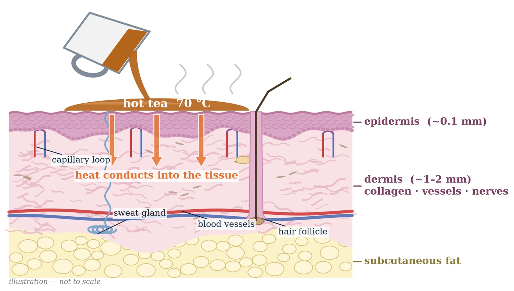
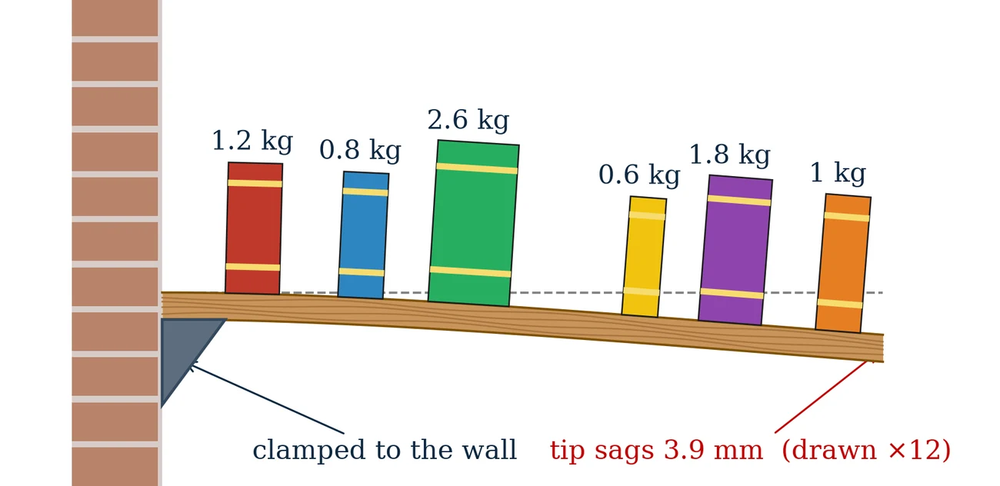
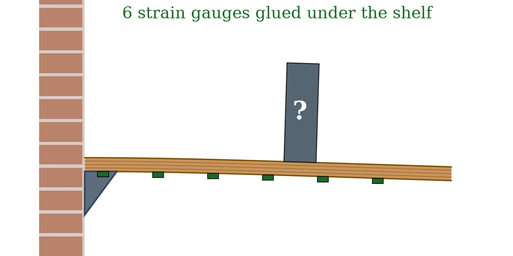
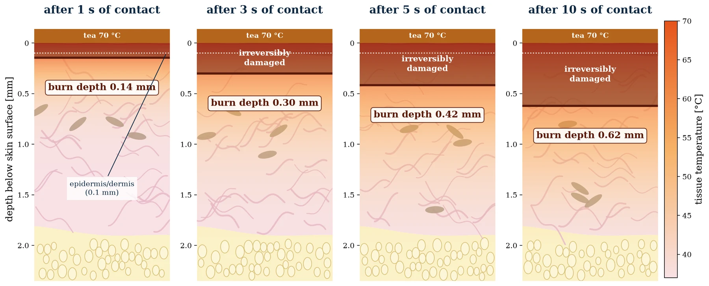
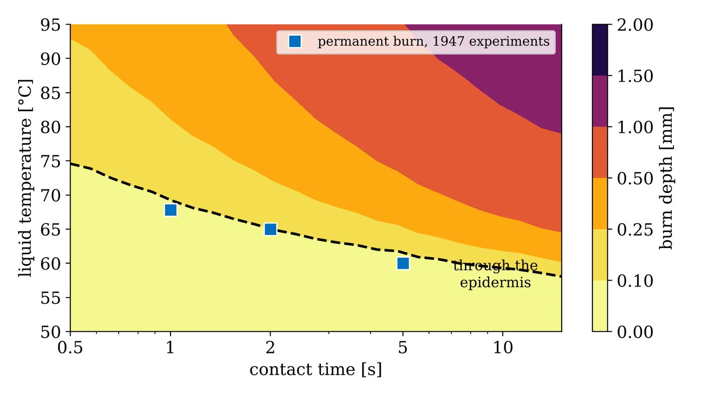
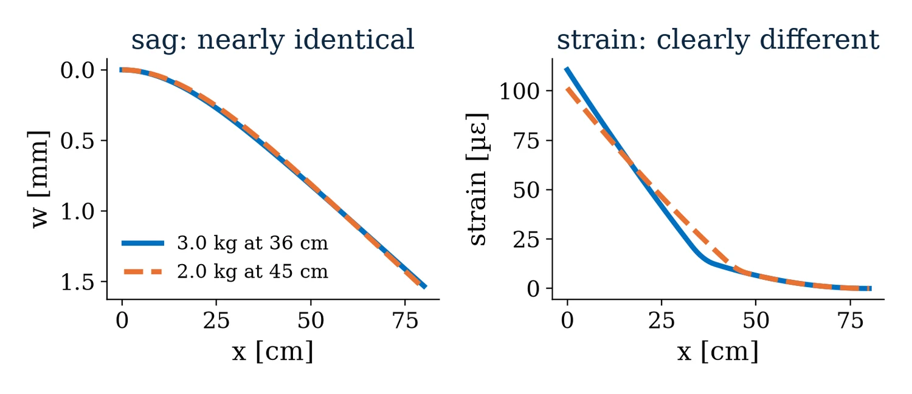

01
One problem per session
Heat in skin, a loaded shelf, a shelf with a hidden book. Each has an exact answer, so every error you see is a real error.
NPTEL Masterclass · 3 live sessions · 6 hours
Physics-informed neural networks and neural operators, built from scratch in PyTorch on three problems you can check by hand: a burn, a bookshelf and a hidden book.
Course introduction from the instructor (13 min).
Most tutorials stop once the network trains. These sessions also show you how to check that it is right, and what to do when it is not.
Heat in skin, a loaded shelf, a shelf with a hidden book. Each has an exact answer, so every error you see is a real error.
Every worksheet has TODO cells and self-checks that unit-test the physics, so you know a step is correct before you train.
Every number on the slides comes from a notebook in your kit. Each notebook generates its own data, so there is nothing to download.
Checklists you can use at work: why a PINN won’t converge, which operator fits your problem, when a physics loss helps and when it hurts.
Three sessions, one storyline
Each session answers the question the previous one leaves open.

Live problemTea at 70 °C spills on your hand. How deep is the burn after five seconds?
Hands-on W1. Build the skin-burn PINN from scratch, validate it against the exact solution, and turn the temperature field into a burn depth with the Henriques damage integral. Then the whole class sweeps the physics-loss weight together.

Live problemAny books, any arrangement: predict how a wall shelf sags, in a millisecond.
Hands-on W2. Generate data from a beam solver, build and train a DeepONet, and test it on shelves it has never seen. Then a design challenge: load the shelf as much as you can and stay under the sag limit.

Live problemOne book is hidden on the shelf. Where is it, how heavy is it, and can you trust the answer?
Hands-on W3. Train a physics-informed operator with zero labelled data, run a class experiment with deliberately wrong physics, then find your own hidden book from six strain gauges.



Learning outcomes
Schedule
Hands-on blocks sit inside the lecture, so you write code within the first 40 minutes of every session.
Times are minutes from the start of each session.
What registered participants receive
Every notebook makes its own data, so you can replace our solver with yours and have a starting project.
PINNs
W1Skin-burn PINN: live worksheet and handoutO1Heated metal rod, forward and inverseO2PINN failure labPDFSession slidesNeural operators
W2Bookshelf DeepONet: live worksheet and handoutO3Traffic-jam fronts with Burgers’ equationO4NOMAD on a travelling pulseO5MIONet: a shelf with knotsO6Latent DeepONet: a floor slab under furniturePDFSession slidesPI operators, inverse problems, hybrids
W3Physics instead of data, and the shelf detective: live worksheet and handoutO7Cooling fin with no solver dataO8Detective: uncertainty and sensor placementO9Hybrid solver labO10Discovering a hidden reaction lawPDFSession slidesThe NPTEL organisers share the kit with registered participants. All notebooks are in PyTorch and run in Google Colab.
Before Session 1 · 5 minutes
Everything runs in the browser on Google Colab. Nothing to install.
Any Google account works. Colab is free.
Click the button below, then Runtime → Run all. It checks PyTorch, tests second derivatives through autograd, and trains a tiny physics-informed network for a few seconds.
Runtime → Change runtime type → T4 GPU makes training faster, but every worksheet is designed for the free CPU.
# the last cell prints PyTorch 2.0 or newer ✓ torch.func available ✓ autograd 2nd-derivative test ✓ tiny PINN trains (loss falls) ✓ matplotlib plots ✓ You are ready for the masterclass.
If the last line does not appear, send the output to the organisers before Session 1.
Instructor
Assistant Professor, Civil and Systems Engineering, with a joint appointment in Applied Mathematics and Statistics · Johns Hopkins University
Her research lies at the intersection of scientific machine learning, computational mechanics and applied mathematics. She develops physics-informed and hybrid neural-physics methods for complex, multiscale and multiphysics problems, including neural operators, operator learning, scientific foundation models and AI-enhanced computational solvers, with applications in materials, mechanics and biomedical systems. She leads the Centrum IntelliPhysics group at the Whiting School of Engineering in Johns Hopkins University.
Papers from the group that the sessions draw on.
Questions
Graduate students, researchers and engineers in mechanical, civil, aerospace, chemical and biomedical engineering, or in applied mathematics, who simulate physical systems and want to use machine learning with them. If you can write a Python function and a for-loop, you can follow the worksheets.
No. Every worksheet runs on the free Colab CPU. The longest training cell in the live worksheets takes about two to three minutes on a Colab CPU, and under a minute on a free T4 GPU.
PyTorch only. Session 3 also uses torch.func for derivatives, which is part of PyTorch 2.0 and later. You can run the notebooks in a local Jupyter installation as well.
Each TODO has a folded hint and a self-check that tells you whether your code is right. The offline worksheets let you practise each idea again at your own pace.
Yes, NPTEL records the live sessions. See the NPTEL registration page for how recordings are made available.
Registration, fees and certificates are handled by NPTEL. Please see the registration page.